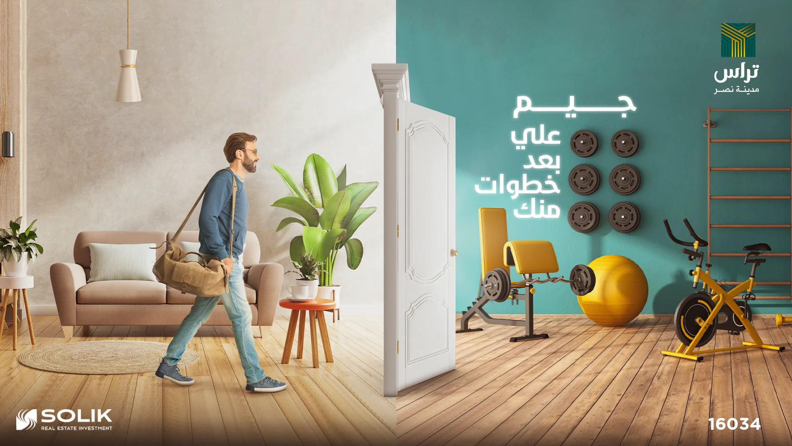
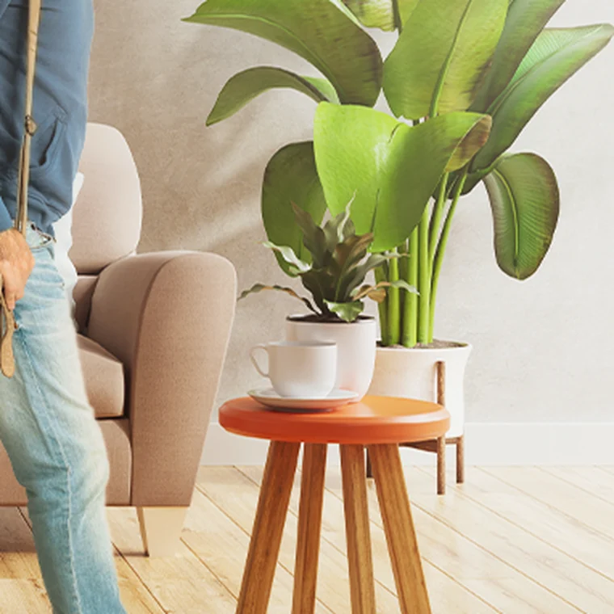
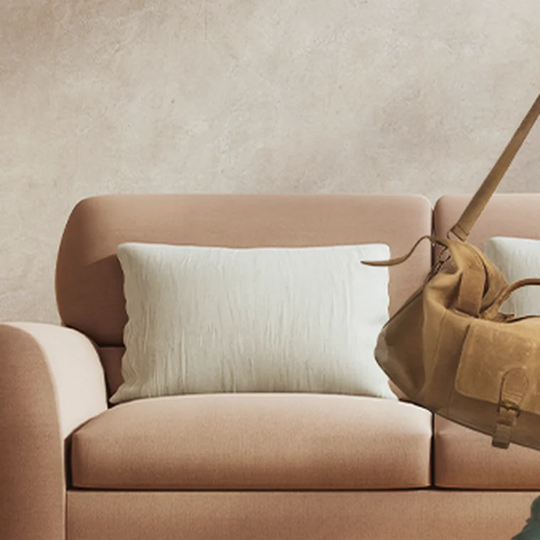
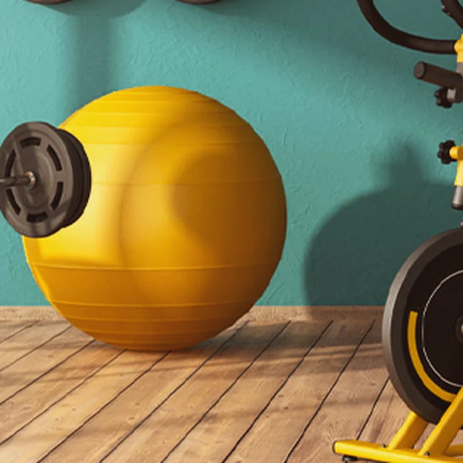

Open your door — you're already there.

Teras' edge is proximity — everything is a step away. The visual had to make 'close to everything' feel literal and effortless.
We take the promise to its limit: open your apartment door and you're already inside the gym — the distance erased.
Clean composition and natural light keep it aspirational and believable, scaling from social to outdoor.


